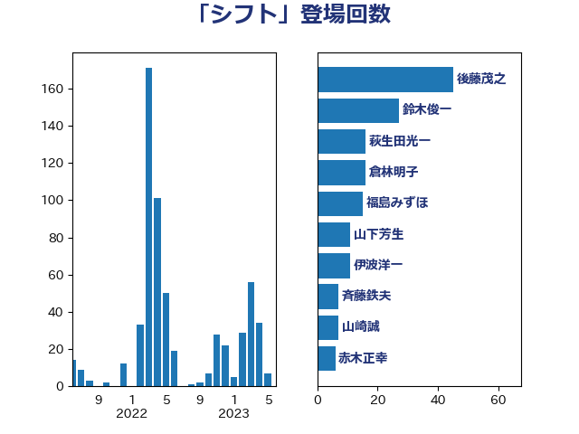

単語「シフト」

| 後藤茂之 | 自由民主党 | 45 回 |
| 鈴木俊一 | 自由民主党 | 27 回 |
| 萩生田光一 | 自由民主党 | 16 回 |
| 倉林明子 | 日本共産党 | 16 回 |
| 福島みずほ | 社会民主党 | 15 回 |
| 山下芳生 | 日本共産党 | 11 回 |
| 伊波洋一 | 無所属 | 11 回 |
| 斉藤鉄夫 | 公明党 | 7 回 |
| 山崎誠 | 立憲民主党 | 7 回 |
| 赤木正幸 | 日本維新の会 | 6 回 |
| 宮本徹 | 日本共産党 | 6 回 |
| 加藤勝信 | 自由民主党 | 6 回 |
| 高木宏壽 | 自由民主党 | 5 回 |
| 鈴木敦 | 国民民主党 | 5 回 |
| 西村康稔 | 自由民主党 | 5 回 |
| 篠原孝 | 立憲民主党 | 5 回 |
| 田村まみ | 国民民主党 | 5 回 |
| 長友慎治 | 国民民主党 | 4 回 |
| 藤巻健太 | 日本維新の会 | 4 回 |
| 紙智子 | 日本共産党 | 4 回 |
| 田村智子 | 日本共産党 | 4 回 |
| 漆間譲司 | 日本維新の会 | 4 回 |
| 清水貴之 | 日本維新の会 | 4 回 |
| 浅田均 | 日本維新の会 | 4 回 |
| 岸田文雄 | 自由民主党 | 4 回 |
| 山添拓 | 日本共産党 | 4 回 |
| 仁木博文 | 無所属 | 4 回 |
| 井坂信彦 | 立憲民主党 | 4 回 |
| 本田顕子 | 自由民主党 | 3 回 |
| 川合孝典 | 国民民主党 | 3 回 |
| 山本剛正 | 日本維新の会 | 3 回 |
| 宗清皇一 | 自由民主党 | 3 回 |
| 伊東信久 | 日本維新の会 | 3 回 |
| 今井絵理子 | 自由民主党 | 3 回 |
| 中西健治 | 自由民主党 | 3 回 |
| 下野六太 | 公明党 | 3 回 |
| ながえ孝子 | 無所属 | 3 回 |
| 高良鉄美 | 無所属 | 2 回 |
| 高木かおり | 日本維新の会 | 2 回 |
| 須藤元気 | 無所属 | 2 回 |
| 阿部司 | 日本維新の会 | 2 回 |
| 長谷川淳二 | 自由民主党 | 2 回 |
| 長谷川岳 | 自由民主党 | 2 回 |
| 鈴木貴子 | 自由民主党 | 2 回 |
| 野田国義 | 立憲民主党 | 2 回 |
| 谷田川元 | 立憲民主党 | 2 回 |
| 西村智奈美 | 立憲民主党 | 2 回 |
| 茂木敏充 | 自由民主党 | 2 回 |
| 田村貴昭 | 日本共産党 | 2 回 |
| 浅川義治 | 日本維新の会 | 2 回 |
| 河野太郎 | 自由民主党 | 2 回 |
| 沢田良 | 日本維新の会 | 2 回 |
| 武部新 | 自由民主党 | 2 回 |
| 櫛渕万里 | れいわ新選組 | 2 回 |
| 松本剛明 | 自由民主党 | 2 回 |
| 本村伸子 | 日本共産党 | 2 回 |
| 庄子賢一 | 公明党 | 2 回 |
| 島村大 | 自由民主党 | 2 回 |
| 岡本あき子 | 立憲民主党 | 2 回 |
| 山口那津男 | 公明党 | 2 回 |
| 小野泰輔 | 日本維新の会 | 2 回 |
| 守島正 | 日本維新の会 | 2 回 |
| 大石あきこ | れいわ新選組 | 2 回 |
| 吉田統彦 | 立憲民主党 | 2 回 |
| 保岡宏武 | 自由民主党 | 2 回 |
| 佐藤正久 | 自由民主党 | 2 回 |
| 伊藤孝恵 | 国民民主党 | 2 回 |
| 伊佐進一 | 公明党 | 2 回 |
| 井上哲士 | 日本共産党 | 2 回 |
| 丸川珠代 | 自由民主党 | 2 回 |
| 一谷勇一郎 | 日本維新の会 | 2 回 |
| 高橋千鶴子 | 日本共産党 | 1 回 |
| 音喜多駿 | 日本維新の会 | 1 回 |
| 阿部知子 | 立憲民主党 | 1 回 |
| 阿部弘樹 | 日本維新の会 | 1 回 |
| 鎌田さゆり | 立憲民主党 | 1 回 |
| 鈴木英敬 | 自由民主党 | 1 回 |
| 鈴木義弘 | 国民民主党 | 1 回 |
| 鈴木庸介 | 立憲民主党 | 1 回 |
| 金村龍那 | 日本維新の会 | 1 回 |
| 金子道仁 | 日本維新の会 | 1 回 |
| 野田聖子 | 自由民主党 | 1 回 |
| 野中厚 | 自由民主党 | 1 回 |
| 重徳和彦 | 立憲民主党 | 1 回 |
| 遠藤良太 | 日本維新の会 | 1 回 |
| 道下大樹 | 立憲民主党 | 1 回 |
| 逢坂誠二 | 立憲民主党 | 1 回 |
| 辻元清美 | 立憲民主党 | 1 回 |
| 足立康史 | 日本維新の会 | 1 回 |
| 西銘恒三郎 | 自由民主党 | 1 回 |
| 藤田文武 | 日本維新の会 | 1 回 |
| 藤木眞也 | 自由民主党 | 1 回 |
| 藤丸敏 | 自由民主党 | 1 回 |
| 菅直人 | 立憲民主党 | 1 回 |
| 若松謙維 | 公明党 | 1 回 |
| 舟山康江 | 国民民主党 | 1 回 |
| 羽生田俊 | 自由民主党 | 1 回 |
| 緑川貴士 | 立憲民主党 | 1 回 |
| 穂坂泰 | 自由民主党 | 1 回 |
| 稲津久 | 公明党 | 1 回 |
| 秋野公造 | 公明党 | 1 回 |
| 神谷裕 | 立憲民主党 | 1 回 |
| 石川香織 | 立憲民主党 | 1 回 |
| 石井苗子 | 日本維新の会 | 1 回 |
| 石井拓 | 自由民主党 | 1 回 |
| 畦元将吾 | 自由民主党 | 1 回 |
| 田村憲久 | 自由民主党 | 1 回 |
| 田嶋要 | 立憲民主党 | 1 回 |
| 牧島かれん | 自由民主党 | 1 回 |
| 牧原秀樹 | 自由民主党 | 1 回 |
| 源馬謙太郎 | 立憲民主党 | 1 回 |
| 湯原俊二 | 立憲民主党 | 1 回 |
| 浮島智子 | 公明党 | 1 回 |
| 浜口誠 | 国民民主党 | 1 回 |
| 河野義博 | 公明党 | 1 回 |
| 河西宏一 | 公明党 | 1 回 |
| 池下卓 | 日本維新の会 | 1 回 |
| 櫻井周 | 立憲民主党 | 1 回 |
| 横沢高徳 | 立憲民主党 | 1 回 |
| 梅谷守 | 立憲民主党 | 1 回 |
| 柚木道義 | 立憲民主党 | 1 回 |
| 東国幹 | 自由民主党 | 1 回 |
| 星北斗 | 自由民主党 | 1 回 |
| 打越さく良 | 立憲民主党 | 1 回 |
| 徳永エリ | 立憲民主党 | 1 回 |
| 川田龍平 | 立憲民主党 | 1 回 |
| 岩渕友 | 日本共産党 | 1 回 |
| 岩本剛人 | 自由民主党 | 1 回 |
| 山本左近 | 自由民主党 | 1 回 |
| 山本太郎 | れいわ新選組 | 1 回 |
| 山崎正恭 | 公明党 | 1 回 |
| 小泉進次郎 | 自由民主党 | 1 回 |
| 小沼巧 | 立憲民主党 | 1 回 |
| 小沢雅仁 | 立憲民主党 | 1 回 |
| 小池晃 | 日本共産党 | 1 回 |
| 小宮山泰子 | 立憲民主党 | 1 回 |
| 寺田稔 | 自由民主党 | 1 回 |
| 宮口治子 | 立憲民主党 | 1 回 |
| 天畠大輔 | れいわ新選組 | 1 回 |
| 塩村あやか | 立憲民主党 | 1 回 |
| 塩川鉄也 | 日本共産党 | 1 回 |
| 堂込麻紀子 | 無所属 | 1 回 |
| 堀内詔子 | 自由民主党 | 1 回 |
| 吉田豊史 | 無所属 | 1 回 |
| 吉田はるみ | 立憲民主党 | 1 回 |
| 吉田とも代 | 日本維新の会 | 1 回 |
| 吉井章 | 自由民主党 | 1 回 |
| 古賀千景 | 立憲民主党 | 1 回 |
| 古賀之士 | 立憲民主党 | 1 回 |
| 古川禎久 | 自由民主党 | 1 回 |
| 古川康 | 自由民主党 | 1 回 |
| 務台俊介 | 自由民主党 | 1 回 |
| 仁比聡平 | 日本共産党 | 1 回 |
| 井原巧 | 自由民主党 | 1 回 |
| 丹羽秀樹 | 自由民主党 | 1 回 |
| 中川郁子 | 自由民主党 | 1 回 |
| 中島克仁 | 立憲民主党 | 1 回 |
| 三宅伸吾 | 自由民主党 | 1 回 |